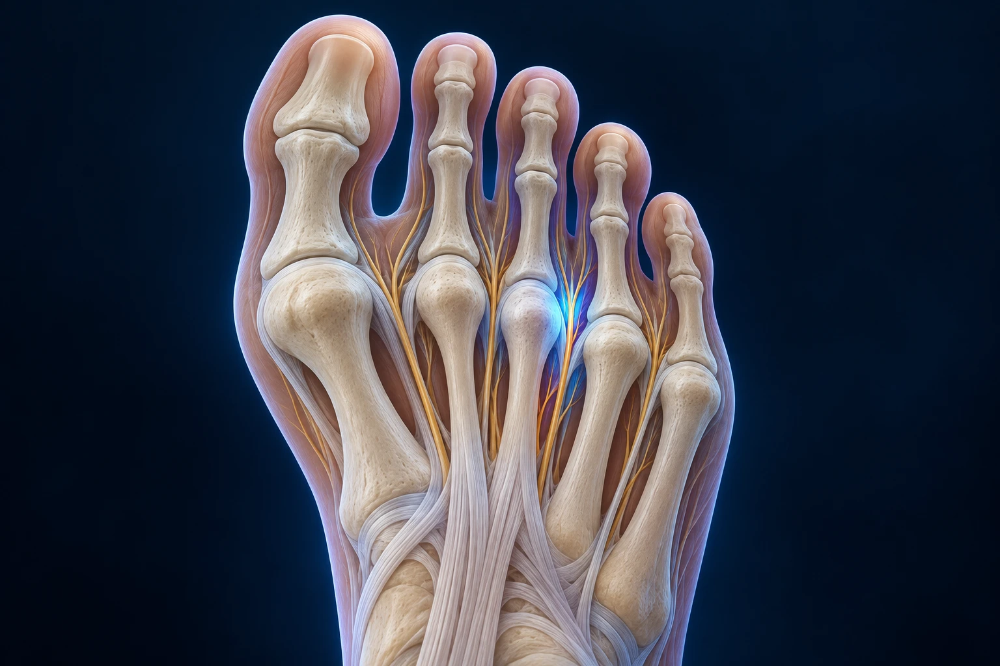

Brûlure entre les orteils et sensation de caillou : est-ce un névrome de Morton ?

Une brûlure dans l’avant-pied, des décharges vers les orteils ou l’impression d’avoir un caillou dans la chaussure peuvent évoquer un névrome de Morton. Ces symptômes ne suffisent toutefois pas à poser le diagnostic. L’examen permet de rechercher une irritation nerveuse et de la distinguer des autres causes de douleur sous l’avant-pied.
Qu’est-ce qu’un névrome de Morton ?
Le terme décrit un épaississement associé à l’irritation d’un nerf entre les métatarsiens, les os longs de l’avant-pied. Il se rencontre fréquemment entre les troisième et quatrième orteils. Malgré son nom, il ne s’agit pas habituellement d’une tumeur cancéreuse.
Imaginez un petit câble sensible qui passe dans un espace soumis à des contraintes répétées. Lorsque cet espace et les tissus voisins irritent le nerf, des sensations de brûlure, d’élancement ou d’engourdissement peuvent apparaître. Cette comparaison explique les sensations, sans résumer toute la mécanique du pied.
Les symptômes peuvent augmenter dans des chaussures étroites ou pendant certaines activités. Ils peuvent aussi varier d’un jour à l’autre. Le soulagement après avoir retiré une chaussure apporte un indice, mais ne confirme pas à lui seul le diagnostic. NHS, névrome de Morton.
Pourquoi faut-il vérifier l’origine de la douleur ?
Une sensation de caillou peut aussi accompagner un problème articulaire, une surcharge sous un métatarsien ou une lésion de la plaque plantaire. Plusieurs anomalies peuvent coexister. Attribuer toute douleur d’avant-pied à un Morton risque donc de conduire à un traitement mal ciblé.
Montrez précisément la zone douloureuse et le trajet des sensations. La gêne reste-t-elle sous le pied ou descend-elle dans un orteil ? Ressentez-vous une perte de sensibilité ? Le problème dépend-il du chaussage, de la durée de marche ou d’un mouvement particulier ?
Apportez une paire de chaussures souvent portée et les semelles déjà utilisées. Leur examen peut aider à comprendre vos contraintes réelles. Une chaussure présentée comme « confortable » n’a pas le même volume ni la même forme pour tous les avant-pieds.
Comment se passe le bilan ?
Le professionnel interroge vos symptômes puis examine l’avant-pied, les articulations et les zones sensibles. Certaines manœuvres peuvent reproduire la douleur ou un ressaut caractéristique. Leur interprétation nécessite l’ensemble du bilan ; il est inutile de comprimer régulièrement votre pied pour tester vous-même le nerf.
Une échographie, parfois une IRM, peut compléter l’examen selon le contexte. Une image doit être rapprochée de la douleur ressentie : la taille d’un épaississement n’est pas, à elle seule, une indication opératoire. Guy’s and St Thomas’, diagnostic et prise en charge du Morton.
Consultez si les symptômes persistent, limitent la marche ou s’accompagnent d’engourdissements. Une douleur soudaine après un traumatisme, un pied rouge et chaud avec fièvre ou une perte importante de sensibilité nécessitent un avis plus rapide. Si vous êtes diabétique, signalez-le dès la prise de rendez-vous.
Que peut-on proposer avant une intervention ?
Une adaptation du chaussage constitue souvent une première étape. Il faut laisser assez de place à l’avant-pied et limiter les compressions gênantes. Des semelles ou des appuis adaptés peuvent être proposés pour modifier les contraintes, avec un réglage individualisé.
L’activité peut être temporairement modulée si certains gestes entretiennent la douleur. Le but est de conserver ce qui reste supportable tout en évitant de répéter une sollicitation nettement douloureuse. Notez les changements réellement utiles plutôt que de multiplier simultanément les chaussures et les accessoires.
Une infiltration peut être discutée selon la situation. Son objectif, ses limites et ses risques doivent être expliqués. Elle ne doit pas être présentée comme une garantie de guérison définitive. La décision de répéter ou de modifier un traitement repose sur son effet observé et sur une réévaluation du diagnostic.
Dans quels cas la chirurgie est-elle discutée ?
Lorsque les symptômes restent importants malgré un traitement non chirurgical adapté et que le diagnostic est suffisamment étayé, une intervention peut être envisagée. Selon la stratégie, elle vise à libérer le nerf ou à retirer le segment nerveux pathologique.
L’ablation du nerf entraîne habituellement une diminution de sensibilité dans une zone des orteils concernés. Cette conséquence doit être comprise avant l’intervention. Des douleurs peuvent persister ou réapparaître, notamment en rapport avec une cicatrice nerveuse. Dudley Group NHS, chirurgie du névrome de Morton.
Les autres risques comprennent notamment les problèmes de cicatrisation, l’infection et une gêne cicatricielle. La voie d’abord et les modalités d’anesthésie sont discutées avec l’équipe. Demandez ce qui ferait choisir une libération ou une résection dans votre cas.
Comment se prépare la récupération ?
Les consignes d’appui, de pansement et de chaussage dépendent de l’intervention. Un gonflement peut gêner temporairement le port des chaussures habituelles. La reprise d’un travail debout ou de longues marches doit donc être anticipée, même si l’intervention est réalisée en ambulatoire.
Ne comparez pas votre récupération à celle d’une autre chirurgie de l’avant-pied. Une opération de Morton, une correction d’hallux valgus et une réparation de plaque plantaire n’ont pas les mêmes objectifs ni les mêmes contraintes. Le programme remis par l’équipe reste votre repère.
Préparez les trajets et les activités indispensables. Si vous devez marcher longtemps pour aller travailler ou accompagner un proche, indiquez-le avant l’opération. Cela permet de discuter d’un délai ou d’une organisation compatible avec la protection du pied.
Qu’attendre de la consultation ?
L’objectif est de relier vos sensations à une cause probable, puis de comparer les solutions. Demandez comment l’efficacité sera évaluée et quand refaire le point si le traitement ne suffit pas. Cette étape évite de passer trop vite d’une douleur mal caractérisée à une intervention.
Les informations du Dr François Lozach sur le pied et la cheville complètent cette lecture. Vous pouvez prendre rendez-vous avec le Dr François Lozach à Sète avec vos examens, vos semelles et vos chaussures habituelles.
Ces conseils sont d’ordre général et ne remplacent pas un avis médical personnalisé.